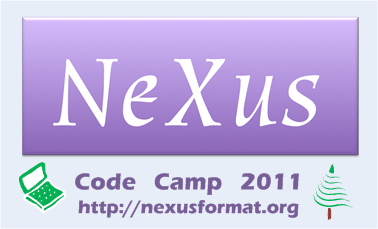

NIAC2011 CodeCamp¶
NIAC2011 CodeCamp

Purpose
Develop NeXus software components through intense effort by small groups working on specific projects and tasks. It is expected that those attending the 2011 NeXus Code Camp will already have strong foundation and understanding in aspects of the NeXus software and come ready with knowledge, tools, and ideas to make significant progress during the event. The specific projects and tasks, as well as the list of participants, are described on this wiki and will be revised as the event draws near.
See previous NeXus Code Camps:
Dates
2011 October 20-22 (Thursday - Saturday)
Daily Agenda
Meeting room is Building 401, Room B2100
Thursday, 2011 October 20
time |
description |
comments |
|---|---|---|
9:00 - 10:15 AM |
meeting |
organize slate of projects and tasks |
10:15 - 10:45 AM |
morning break |
(included) |
10:45 AM - 12:00 PM |
meeting |
work on projects and tasks |
12:00 - 1:15 PM |
Comparison of APS Data_Exchange+HDF5 for Tomography with NeXus+HDF5 |
(*) working lunch onsite, hosted by APS, 401/B2100 |
1:15 - 3:15 PM |
meeting |
work on projects and tasks |
3:15 - 3:30 PM |
afternoon break |
(included) |
3:30 - 5:00 PM |
meeting |
work on projects and tasks |
5:00 - 6:00 PM |
meeting |
daily summary (plenary) |
(*) speakers for the working lunch include:
Chris Jacobsen, APS (scientific lead, APS Data Exchange format)
Mark Koennecke, PSI (NeXus, chairman of NIAC)
Friday, 2011 October 21
time |
description |
comments |
|---|---|---|
9:00 - 10:15 AM |
meeting |
work on projects and tasks |
10:00 - 10:30 AM |
morning break |
(included) |
10:30 AM - 11:30 PM |
The Current State of NeXus |
public talk, 401/A1100 |
12:00 - 1:15 PM |
lunch |
offsite, traveler”s expense |
1:15 - 3:15 PM |
meeting |
work on projects and tasks |
3:15 - 3:30 PM |
afternoon break |
(included) |
3:30 - 5:00 PM |
meeting |
work on projects and tasks |
5:00 - 6:00 PM |
meeting |
daily summary (plenary) |
Saturday, 2011 October 22
time |
description |
comments |
|---|---|---|
9:00 - 10:15 AM |
meeting |
work on projects and tasks |
10:15 - 10:45 AM |
morning break |
(included) |
10:45 AM - 12:00 PM |
meeting |
work on projects and tasks |
12:00 - 1:15 PM |
lunch |
offsite, traveler”s expense |
1:15 - 3:15 PM |
meeting |
work on projects and tasks |
3:15 - 3:30 PM |
afternoon break |
(included) |
3:30 - 5:00 PM |
meeting |
work on projects and tasks |
5:00 - 6:00 PM |
meeting |
Code Camp wrap-up (plenary) |
Planning
Business Matters
Since this is not to be a meeting of the full NIAC, no business matters can be resolved.
Projects and Tasks
These items are sorted in order of priority that they be finished. Only items that currently exist in the project plan are being worked on.
move to using 1.8 version of HDF5 API (would allow HDF5 transparent external linking)
NXclonehandle
PyTree API
discuss axes for multi dimensional scans
discuss axis dependency encoding
discuss and decide switch to CMake for building NeXus
discuss and decide on the use of sphinx for documentation
Design NXdict replacement based on NXDL
Improve nxvalidate
Link NeXus WWW-site with docbook manual
A Fedora installer
Discuss and write NeXus for the Impatient
Cleanup NeXus applications
Other Tasks
Items not currently on the project plan, but have arisen recently:
support for more than one unlimited array dimension (http://trac.nexusformat.org/code/ticket/258)
support larger dataset dimensions (currently dimensions are “int” so overflow at > 2^31 elements)
Presentations
presentation about cmake (Freddie Akeroyd or Pete Peterson)
about sphinx for documentation (Pete Jemian)
about parallel HDF (Mark Koennecke, anyone else with more experience?)
assessment of work to migrate from HDF 1.6 to HDF 1.8 (Freddie Akeroyd)
public talk: The Current State of NeXus, Building 401, Room A1100, Friday, Oct. 21, 10:30 - 11:30 AM
Schedule
arrive the previous day (Wednesday, 2011-10-19)
conference check-in first morning (Thursday, 2011-10-20), 401-B2100
meet all day (Thursday), 401-B2100
meet all day (Friday), 401-B2100
meet all day (Saturday), 401-B2100
checkout next day (Sunday, 2011-10-23)
Meeting room is Building 401, Room B2100
Here is the daily schedule (tentative):
time |
description |
comments |
|---|---|---|
9:00 - 10:15 AM |
meeting |
work on projects and tasks |
10:15 - 10:45 AM |
morning break |
(included) |
10:45 AM - 12:00 PM |
meeting |
work on projects and tasks |
12:00 - 1:15 PM |
lunch |
offsite, traveler”s expense |
1:15 - 3:15 PM |
meeting |
work on projects and tasks |
3:15 - 3:30 PM |
afternoon break |
(included) |
3:30 - 5:00 PM |
meeting |
work on projects and tasks |
5:00 - 6:00 PM |
meeting |
daily summary (plenary) |
Notes:
late-afternoon wrap-up (plenary) each day
morning and afternoon breaks will be included in amenities charge
breakfast, lunch, dinner will be in a local restaurant at traveler”s expense
Practical Matters
Registration
APS Visitor registration
web site: https://www.aps.anl.gov/About/Visiting/visitor_registration.php
You must register as an APS Visitor in advance (to identify matters related to Passport, Visa, and ANL Site Access) or you should not expect access to the ANL site. If asked, indicate that you are visiting Pete Jemian.
For the paperwork of all international visitors, we need each degree, year earned, and institution name. Additionally for certain visas, we need additional information:
Venue
Please reserve your own rooms directly with the hotel:
Directions and Maps
map to hotel:
airport:
Chicago O”Hare (ORD): international
Chicago Midway (MDW): domestic
Milwaukee, WI Mitchell Field (MKE): distant alternative
taxi:
Call for a taxi pickup only after you have all your bags
Must be a taxi that goes to Chicago suburbs
suburban taxi will pickup in second lane of arrivals at Chicago O”Hare airport
http://www.americantaxi.com, 1-800-244-1177 (automated system)
others
airport bus: http://www.airportexpress.com/shuttles/ohare.html
commuter train:
inconvenient
Host
Pete Jemian
Advanced Photon Source, Argonne National Laboratory
email: jemian _at* anl.gov
office phone: 1-630-252-3189 (forwards to mobile)
Google voice: +1-847-859-9775 (forwards to mobile)
Costs
Expect hotel rate to be US$### (approximate, subject to change)
Please reserve your own rooms directly with the hotel (website, phone, )
Conference fee: no fee
food at morning and afternoon breaks will be provided
perhaps (no guarantee) a small meeting souvenir
regular meals (breakfast, lunch, dinner) will be traveler”s expense
Equipment
item |
quantity |
who provides? |
|---|---|---|
projector & screen |
host |
|
LCD displays, keyboards, & mice |
host |
|
120 VAC, 60 Hz, US-style 3-prong extension cords |
sufficient |
host |
foreign electrical power adapter |
as needed |
traveler |
Wi-Fi connections |
sufficient |
hotel |
Participants
participant |
affiliation |
arriving |
departing |
registration? |
ANL gate pass? |
|---|---|---|---|---|---|
Pete Jemian <Pete_Jemian.html> |
host |
host |
host |
host |
|
Mark Konnecke <Mark_Koennecke.html> |
20-11-10 |
20-11-24 |
complete |
yes |
|
Tobias Richter <Tobias_Richter.html> |
20-11-19 |
20-11-25 |
complete |
yes |
|
Eugen Wintersberger <Eugen_Wintersberger.html> |
20-11-19 |
20-11-23 |
complete |
yes |
|
Freddie Akeroyd <Freddie_Akeroyd.html> |
20-11-19 |
20-11-23 |
complete |
yes |
|
Peter Peterson <Peter_Peterson.html> |
20-11-19 |
20-11-22 |
complete |
yes |
|
Ray Osborn <Ray_Osborn.html> |
20-11-20 |
20-11-22 |
N/A |
yes |
|
Paul Kienzle <Paul_Kienzle.html> |
20-11-19 |
20-11-23 |
? |
pending |
Final Report
As some of you might know, the NeXus technical subcommittee and especially Pete Jemian have invested a lot of work to update the NeXus manual in the last year. It is now current and much better then it used to be. In this work we arrived at a major milestone on our last code camp in Chicago, October 20 - 22. Now, the NeXus WWW site has received a new front page and its content is created from the NeXus manual. Though not all of it looking as beautiful as it could be, at least the content is correct and up to data.
Another good news is that we had some discussions with the detector manufacturer Dectris. They do the Mythen, Pilatus and Eiger detectors. With the Eiger detector they will start writing HDF-5 files with NeXus conventions. The programming model will be that Dectris writes the detector data and the local DAQ system adds further meta data to the HDF-5 NeXus file. In order to support this, some more fields have been added to NXdetector.
Other things which we addressed during the code camp:
For HDF-5 all dimensions can now be unlimited
NAPI was moved from HDF-5 1.6 to HDF-5 1.8 which is now current. Support for HDF-5 1.6 was stopped two years ago.
A set of additional API functions was defined which allow to use 64 bit integers for the dimensions.
Some more manual work was done: there will be examples how to write NeXus files with the HDF-5 API alone soon. A new manual, NeXus for the Impatient, is in progress. This is a short introduction to NeXus in about 10 pages.
Some more work was done to integrate Ray Osborn”s tree python API and to write more tests for the python interface.
Some progress was made on axis dependency encoding
We will gradually move from autotools to cmake for the NeXus API.
We had some discussions on a new C++ tree API to be written by Eugen Wintersberger, on a parallel HDF driver for NeXus, and a possible move to sphinx for the NeXus manual.
All in all, we managed to put a man-month of work into NeXus between the seven of us who attended the code camp. Many thanks to everyone who participated and to Pete Jemian who did a wonderful job as a local organiser. [PRJ: I thank all of you.]
We are in good hope that a new version of the NeXus-API will be released before the end of this year. We also strive to make a 1.0 release of the NeXus application definitions by then.
Best Regards, Mark Koennecke
Added note
We also has a good discussion with scientists and staff of the APS regarding the release of details of how NeXus is implemented in HDF5. Also discussed were current APS plans to store data in HDF5 files but, for performance reasons as well as simplicity, not necessarily in compliance with NeXus.